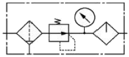

건설기계정비산업기사 (2006-03-05 기출문제)
1과목: 건설기계정비
1. 휠 구동식 차량에서 정의 캠버이면 바퀴의 위쪽이 어느 쪽으로 기울게 되는가?
- 바깥으로
- 안으로
- 앞으로
- 뒤로
(정답률: 91%)

2. 디젤기관의 연료장치에서 공기빼기 작업 중 잘못된 것은?
- 에어 블리드로 기포가 나올 때 에어 블리드를 완전히 조인다.
- 연료탱크에 연료를 주입한다.
- 연료필터의 에어 블리드를 풀어 공기가 배출된 다음 잠근다.
- 플라이밍 펌프 손잡이를 상, 하 작동시킨다.
(정답률: 87%)
3. 주행 중 충전램프 경고등이 켜질 때의 원인이 아닌 것은?
- 팬 벨트의 장력이 크다.
- 축전지 접지 케이브이 이완 되었다.
- 발전기 뒷부분 소켓이 바졌다.
- 발전기나 충전장치가 불량하다.
(정답률: 87%)
4. 불도저의 속도가 6m/s, 견인력이 150gkt일 대 견인마력은 얼마나 되는가?
- 10ps
- 12ps
- 15ps
- 20ps
(정답률: 47%)
5. 건설기계 디젤기관에서 터보차저에서 터보차저에 카본이 많고 마찰이 심할 때 발생되는 사항은?
- 실화현상
- 동력의 저하
- 엔진시동이 잘 안된다.
- 소음과 함께 시동이 꺼진다.
(정답률: 77%)
6. 건설기계에서 스크레이퍼의 일반적인 현가장치로 많이 쓰이는 형식은?
- 판 스프링
- 고무 스프링
- 코일 스프링
- 공기 스프링
(정답률: 56%)
7. 어떤 덤프트럭의 변속비가 1.5구동 피니언의 잇수 7, 링기어의 잇수 49, 구동바퀴의 유효 반지름이 30mm이다. 추진축의 회전수가 2800rpm일 대 차속은?
- 약 34km/h
- 약 38km/h
- 약 42km/h
- 약 45km/h
(정답률: 39%)
8. 건설기계의 교류발전기에서 고장이 아닌 것은?
- 다이오드 단락
- 전압조정 불량
- 로터 코일의 단선
- 컷아웃 릴레이 불량
(정답률: 75%)
9. 천공기 로드의 회전수 조정에 대한 설명이다. 틀린 것은?
- 경앙 일 때에는 회전수를 늦게 조정한다.
- 연앙 일 때에는 회전수를 빠르게 조정한다.
- 작은 구격일 때에는 회전수를 빠르게 조정한다.
- 암질과 비트구경은 회전수와는 무관하다.
(정답률: 80%)
10. 전자제어 엔진의 컴퓨터(ECU, ECM)에는 크게 입력계통과 출력계통으로 구분할 수 있다. 이 중에서 입력계통이 아닌 것은?
- 냉각수 온도 센서(W.T.S)
- 흡기온도 센서(A.T.S)
- 분사 밸브(injector)
- 스로틀 포지션 센서(T.P.S)
(정답률: 65%)
11. 전기자 전류가 20(A)일 때 10kgf-m의 토크를 내는 직권전동기가 있다. 이 전동기의 전기자 전류가 40(A)일 때의 토크는?
- 10m-kgf
- 20m-kgf
- 30m-kgf
- 40m-kgf
(정답률: 44%)
12. 공기식 브레이크의 작동 공기압력은 일반적으로 얼마 정도 인가?
- 1~3kgf/cm2
- 5~7kgf/cm2
- 10~13kgf/cm2
- 15~17kgf/cm2
(정답률: 87%)
13. 로더의 이동 운반 작업 시 일반적으로 버킷은 지상으로부터 약 얼마 정도 들고 이동하는 것이 적당한가?
- 10cm
- 50cm
- 90cm
- 150cm
(정답률: 78%)
14. 도로주행 타이어식 건설기계에서 우측 방향지시등 작동시 점멸 회수가 빠르다. 원인은?
- 좌측 전구 단선
- 우측 전구 단선
- 방량지시등 스위치 불량
- 좌측 앞과 우측 뒤 전구 단선
(정답률: 69%)
15. 작동체를 주회로 보다 낮은 압력으로 작동시키고자 할 때 분기회로에 사용되는 밸브는?
- 카운터 밸런스 밸브
- 시퀀스 밸브
- 릴리프 밸브
- 감압 밸브
(정답률: 55%)
16. 기관에서 풀리와 댐퍼의 결함으로 인하여 발생되는 현상은?
- 기관의 과도한 진동
- 실화현상
- 동력의 저하
- 기관의 과열 현상
(정답률: 100%)
17. 15톤 트랙터의 평균 접지압은? (단, 접지 길이 4m, 트랙 슈의 폭 30cm이다.)
- 1.6kgf/cm2
- 1.066kgf/cm2
- 0.937kgf/cm2
- 0.625kgf/cm2
(정답률: 40%)
18. 지게차의 리프트 실린더가 2개인 장비에서 좌우 실린더 작동 행정이 상이하다. 정비방법은?
- 리프트 실린더의 캐리지 사이에 심(shim)을 넣어 조정한다.
- 리프트 실린더의 로드를 돌려 조정한다.
- 작동이 늦은 리프트 실린더의 압력을 낮춘다.
- 작동이 늦은 리프트 실린더의 압력을 높인다.
(정답률: 77%)
19. 디젤기관에서 보수형 본사펌프의 일반적인 태핏 간극으로 가장 가까운 것은?
- 0.⑤mm
- 0.5mm
- 5mm
- 50mm
(정답률: 80%)
20. 전자제어 디젤기관에서 제어 유닛이 제어하는 액추에이터와 거리가 먼 것은?
- 인젝션 펌프 제어
- 센서 제어
- EGE 밸브 제어
- 예열장치 제어
(정답률: 87%)
2과목: 내연기관
21. 내연기관의 기계효율을 높이는데 무관한 것은?
- 과급기 구동마력을 크게 한다.
- 윤활이 잘 되도록 한다.
- 기관의 평형을 좋게 한다.
- 배기가스의 배출 저항을 줄인다.
(정답률: 28%)
22. 압력 2.5kgf/cm2, 체적 0.3m3의 기체가 일정압력하에 22,500kgf/cm의 일을 하였다. 체적의 팽창된 양은 몇 m3인가?
- 0.9
- 1.2
- 1.5
- 1.8
(정답률: 77%)
23. 내연기관 시험계기 중의 하나인 지압계에 의하여 체크될 수 있는 사항 중에서 해당되지 않는 것은?
- 홉, 배기밸브 개폐시기의 적부(適否)
- 평균 유효압력 및 도시마력의 산출
- 압축압력 및 최고압력의 크기
- 연소온도와 연소가스의 량
(정답률: 40%)
24. 가솔린이 완전 연소되었을 때 나타나는 생성물은?
- CO2와 H2O
- CH와 CO2
- CO와 HO
- SO2와 CO
(정답률: 83%)
25. 회전수가 1000rpm인 어떤 디젤기관의 분사지연과 착화지연시간을 1/600sec라 하면, 상사점전 몇 도에서 연료분사 하여야 하는가? (단, 크랭크의 회전각도로 환산하며 상사점에서 최대 폭발압력이 발생하는 것으로 한다.)
- 9°
- 10°
- 11°
- 12°
(정답률: 45%)
26. 다음의 연료 중 인화점이 가장 낮은 것은 어느 것인가?
- 가솔린
- 경우
- 중유
- 등유
(정답률: 77%)
27. 가솔린을 분사하여 공기와 혼합하는 분사식의 장점이 아닌 것은?
- 증기폐쇄의 발생시 분사가 정확하다.
- 저온 시동이 가능하다.
- 정시 분사방법으로 열효율을 높일 수 있다.
- 분사량의 조정으로 정확한 혼합비 조정이 가능하다.
(정답률: 60%)
28. 고속회전 기관에 가장 적합한 윤활유는?
- 저점도의 윤활유
- 고점도의 윤활유
- 비등점이 낮은 윤활유
- 응력직중 작용을 할 수 있는 윤활유
(정답률: 65%)
29. 디젤 기관의 연소실 중에서 분무의 형성이 그다지 중요하지 않고 분사압력이 낮아 분구도 1개로서 충분하며 착화가 어렵고 냉각손실이 가장 큰 형식은?
- 직접분사식
- 예연소실식
- 공기실식
- 와류실식
(정답률: 65%)
30. 다음 중 터보차저의 구동에너지로 사용되는 것은?
- 기관의 냉각수에 의해 구동
- 기관의 신기 흡입가스로 인해 구동
- 기관의 크랭크샤프트에 의해 구동
- 기관의 배기가스에 의해 구동
(정답률: 87%)
31. 벤투리(Benturi)에서 단면적과 유속은?
- 서로 반비례한다.
- 서로 비례한다.
- 유속은 단면적의 제곱에 비례한다.
- 유속은 단면적의 제곱에 반비례한다.
(정답률: 77%)
32. 소구기관에 관한 설명으로 틀린 것은?
- 구조가 간단하여 제작, 보수, 조직이 용이하다.
- 장시간 무부하 저속 운전을 할 수 있다.
- 마력 당 중량 및 진동은 크나 연료 소비율은 적다.
- 저질 연료를 사용할 수 있다.
(정답률: 58%)
33. 직렬 4기통 기관에서 보상축(counter balance shaft)을 설치하는 직접적인 이유는?
- 소음을 줄이기 위해 설치한다.
- 회전 관성을 감소시키기 위해 설치한다.
- 실린더 축선방향의 진동을 줄이기 위해 설치한다.
- 크랭크축의 진동과 공진이 되도록 하기 위해서 설치한다.
(정답률: 44%)
34. 다음 중 피스톤 간극이 너무 클 경우 발생하는 현상이 아닌 것은?
- 실린더와 피스톤 사이에 소결이 일어난다.
- 압축력이 저하된다.
- 블로바이 현상이 나타난다.
- 피스톤 슬랩 현상이 일어난다.
(정답률: 79%)
35. 어떤 디젤기관이 압축 상사점에서 체적이 1/17로 압축되고, 동시에 온도가 20℃부터 500℃로 되었다고 한다. 이 때의 압축압력은? (단, 대기압은 1at이다.)
- 약 45(at)
- 약 50(at)
- 약 75(at)
- 약 100(at)
(정답률: 40%)
36. 가스터빈이 왕복식 내연기관에 비해 장점이 아닌 것은?
- 저속 운전시 성능이 양호하다.
- 기구가 간단하고 토크 변동이 적다.
- 동일 마력에서는 소형 경량화 할 수 있다.
- 연소가 용이하고 저급의 연료도 사용할 수 있다.
(정답률: 56%)
37. 압축비 ε=6인 오토 사이클의 이론 열효율은 얼마인가?
- 약 41.6%
- 약 46.4%
- 약 49.6%
- 약 53.6%
(정답률: 32%)
38. 엔진이 과열될 때 주로 나타나는 현상은?
- 서모스타트의 오버 쿨(Over Cool)
- 노킹
- 서지(Surge)
- 오버 슈트(Over Shoot)
(정답률: 85%)
39. 이상적 연료 사이클에 있어서 필요한 가정이 아닌 것은?
- 기체와 기통 벽 사이에 열 교환이 없다.
- 마찰이 존재하지 않는다.
- 비가역 단열과정이다.
- 연료와 공기가 완전 혼합하다.
(정답률: 75%)
40. 가솔린 기관의 배기가스 저감장치에는 삼원 촉매장치가 많이 사용되는데, 삼원 촉매는 이론공연비 근처에서 뛰어난 정화 특성을 갖는다. 이 삼원 촉매장치의 촉매로 사용되는 것이 아닌 것은?
- 백금
- 로듐
- 파라듐
- 황산염
(정답률: 96%)
3과목: 유압기기 및 건설기계안전관리
41. 유압회로 중에 발생하는 서지압을 흡수할 목적으로 사용되는 회로는?
- 감압 회로
- 무부하 회로
- 동조 회로
- 축압기 회로
(정답률: 67%)
42. 유압기기의 작동 유체 속의 오염 물질인 수분의 영향에 관한 설명으로 틀린 것은?
- 캐비테이션이 발생한다.
- 작동유의 방청성을 저하시킨다.
- 작동유의 윤활성을 저하시킨다.
- 작동유의 산화 및 열화를 저하 시킨다.
(정답률: 70%)
43. 다음 중 유압기기에서의 백업 링(Back-up ring)을 설치하는 주목적인 것은?
- O링이 틈새를 적게 한다.
- O링이 틈새를 크게 한다.
- O링이 움직임을 좋게 한다.
- O링이 빠져나오는 것을 방지한다.
(정답률: 100%)
44. 보기와 같은 유체 조정기기의 유압기호로서 맞는 것은?

- 유량계측 검류기
- 가열ㆍ냉각온도 조절기
- 기름분무 분리기
- 공기압 조정 유닛
(정답률: 66%)
45. 고정용량형 펌프를 설명한 것으로 올바른 것은?
- 압력이 높아지면 펌프 내부의 누설이 증가하여 약간의 토출량 감소가 발생한다.
- 펌프에서 토출되는 에너지의 양이 항상 일정하다.
- 토출측 압력변화에 따라 토출되는 유체의 체적이 비례하여 변한다.
- 기호로 표시할 때 펌프의 기호 위에 화살표시를 한다.
(정답률: 50%)
46. 유압기기에서 동기 회로에서 두 개의 실린더가 같은 속도로 움직일 수 있도록 제어해 주는 밸브는?
- 정지 밸브
- 체크 밸브
- 분류 밸브
- 한계 밸브
(정답률: 77%)
47. 유압유의 구비 조건으로 틀린 것은?
- 산화 안정성이 있을 것
- 소포성이 좋을 것
- 윤활성이 좋을 것
- 점도지수가 낮을 것
(정답률: 84%)
48. 다음은 포크 리프트에 사용되는 유압펌프에 대하여 설명한 것이다. 틀린 것은?
- 회전수의 큰 변동 폭에 견딜 수 있어야 한다.
- 유압펌프는 대부분 엔진과 직결 구동된다.
- 소형의 방향제어밸브 사용으로 높은 피크압 발생이 자주 일어난다.
- 대기 중에 노출되어 있으므로 유온 상승에 대한 염려가 없다.
(정답률: 70%)
49. 유압기어 모터의 1회전 당 송출 유량이 60cc, 공급 유량이 72ℓ/min이고 출력축의 회전수는 1100rpm이었다. 이 모터의 체적 효율은?
- 82%
- 87%
- 92%
- 97%
(정답률: 59%)
50. 압력 릴리프 밸브의 작동압력에 관한 특성을 설명한 것으로 가장 적합한 것은?
- 작동형 릴리프 밸브에서 크래킹 압력은 설정압의 10% 정도이다.
- 크랭킹 압력은 밸브의 포핏이 열리기 시작하는 압력으로 설정압보다 높을 수도 있다.
- 작업요소의 속도조정은 크랭킹 압력과 전개압력과의 차이인 압력 오버라이드 구간에서는 불가능하다.
- 일반적으로 간접 작동형(파일럿 조작형)릴리프 밸브의 크래킹 압력이 작동형보다 낮다.
(정답률: 43%)
51. 다음 중 운반기게를 사용하여 작업을 할 때 주의사항으로 적합하지 않은 것은?
- 출입구, 사거리, 커브에 이르면 운반기계의 취급에 주의한다.
- 둥근 물건은 차대에서 구르지 않도록 쐐기를 끼운다.
- 여러 물건을 쌓을 때는 무거운 것은 밑에, 가벼운 것은 위에 쌓는다.
- 운반기계의 성능을 잘 알 경우에는 적재 하중을 규정중량의 10%까지 초과할 수 있다.
(정답률: 100%)
52. 화재에서 연소의 기본 3요소란 무엇인가?
- 고온+연소+가연물
- 가연물+산소+가스
- 산소+가연물+점화원
- 산소+가연물+공기
(정답률: 95%)
53. 건설기계의 취급 및 정비시 주의 할 사항 중 거리가 먼 것은?
- 중량 부품을 들어올릴 때에는 적합한 호이스트 장치를 사용한다.
- 라디에이터의 캡, 그리스의 연결부 또는 유압 장치의 캠을 열 때에는 각별히 조심한다.
- 건설기계의 세척이나 윤활유 주입시는 기관을 시동상태에서 한다.
- 정비하는 장소는 환기가 잘 되는지 확인한다.
(정답률: 97%)
54. 수공구 사용방법 중 올바른 것은?
- 렌치에 파이프를 끼워 사용한다.
- 해머의 타격면이 넓어진 것을 그냥 사용한다.
- 잘 풀리지 않는 볼트는 파이프렌치를 사용하여 푼다.
- 볼트와 너트 조임 작업은 오픈엔드렌치 보다는 복스렌치를 사용한다.
(정답률: 77%)
55. 사용중인 오일의 성능을 평가하기 위해서 사용유의 시료 채취시 주의사항이 아닌 것은?
- 윤활계통이 운전되고 난 직후 오일의 온도가 상온상태에서 채취한다.
- 각종 요구되는 시험항목을 시험하기에 충분한 양의 시료(약 3리터)를 채취한다.
- 깨끗한 시료 용기를 사용하되 채취하고자 하는 오일을 이용하여 3번 이상 씻어낸 후 채취한다.
- 시료채취의 통로(튜브, 코크 등)에 이물질이 없는지 확인하고 어느 정도의 오일을 뽑아낸 후에 채취한다.
(정답률: 73%)
56. 추진축 및 조감속 장치의 탈, 부착 작업을 할 때에 안전 및 유의사항으로 적합하지 않은 것은?
- 추진축에 설치되어 있는 평형추를 떼어내서는 안된다.
- 추진축의 플렌지 요크 볼트는 규정된 토크로 조여야 한다.
- 건설기계차량 밑에서 작업을 할 때에는 보안경을 착용하고 작업한다.
- 종감속장치의 캐리어를 떼어 낼 때에는 쇠망치로 두들겨 떼어 낸다.
(정답률: 93%)
57. 안전모의 사용 방법 및 보관 방법 중 틀린 것은?
- 큰 충격을 받은 것과 외관에 손상이 있는 것은 사용을 피해야 한다.
- 안전모를 차에 싣고 다닐 때는 뒷 창 밑에 두어서는 안된다.
- 통풍을 목적으로 모체에 구멍을 뚫을 경우에는 드릴로 구멍을 낸다.
- 모체가 오염된 경우는 유기 용제를 사용해야 하지만 강도에 영향이 없어야 한다.
(정답률: 90%)
58. 유류저장 창고를 선정하는데 있어 안전에 위배되는 것은?
- 가능한 한 사용목적과 가까운 곳에 위치할 것
- 밝은 색 페인트칠을 하여 항상 청결을 유지할 것
- 물 빠짐이 좋은 곳이며 소화기를 창고 내에 비치할 것
- 통풍에 지장이 없으면 불필요한 창문, 문 등은 수를 줄일 것
(정답률: 50%)
59. 다음 중에서 아크 용접을 할 때 기공이 생기는 원인이 되는 것은?
- 용접봉이 가늘 때
- 용접봉이 굵을 때
- 용접봉이 건조하였을 때
- 용접봉에 습기가 있었을 때
(정답률: 86%)
60. 건설기계 전기배선도에서 주의할 점을 나열한 것이다. 이중에 잘못된 것은?
- 배선작업에서의 접촉과 차단은 신속히 하는 것이 좋다.
- 배선 차단시는 먼저 어스를 떼고 차단한다.
- 배선 연결시는 우선 어스를 붙이고 연결한다.
- 배선 작업장은 건조해야 한다.
(정답률: 74%)
4과목: 일반기계공학
61. #6306 레이디얼 볼베어링의 안지름은?
- 6mm
- 30mm
- 12mm
- 36mm
(정답률: 65%)
62. 다음 중 일반적으로 활동에 구멍 뚫기 작업에 사용하는 드릴의 날 끝 각으로 가장 알맞은 것은?
- 90°~120°
- 118°
- 100°
- 60°
(정답률: 70%)
63. 기어에서 언더컷 현상이 일어나는 원인은?
- 잇수비가 아주 클 때
- 잇수가 많을 때
- 이 끝이 둥글 때
- 이 끝이 높이가 낮을 때
(정답률: 60%)
64. 인장강도가 4200kgf/cm2인 연강봉이 있다. 안전율이 10이면 허용 응력은 몇 kgf/cm2인가?
- 42.000
- 42
- 280
- 420
(정답률: 47%)
65. 유니버설 이음(Universal joint) 설명으로 올바른 것은?
- 2축이 평행하고 있을 때에 사용하는 클러치이다.
- 2축이 직교할 때에 사용되고 운전 중 단속할 수 있다.
- 2축이 교차하고 있을 때에 사용하고 크랭크축이다.
- 2축이 교차하는 경우에 사용되는 커플링의 일종이다.
(정답률: 85%)
66. 금속재료의 물리적 성질이 아닌 것은?
- 비중
- 열전도율
- 취성
- 선챙창계수
(정답률: 60%)
67. 유압장치에 사용되는 유압유 저장용의 용기로 어큐물레이터라고도 하는 유압 부속기기는?
- 측압기
- 유압 필터
- 증압기
- 유압 유니트
(정답률: 100%)
68. 화염온도가 가장 높고 발열량에 비하여 가격도 저렴하여 가스용접에 많이 사용하는 가스는?
- 수소
- 프로판
- 일산화탄소
- 아세틸렌
(정답률: 79%)
69. 냉간 가공의 특징이 아닌 것은?
- 가공면이 매끄럽고 곱다.
- 가공도가 크다.
- 연신율이 작아진다.
- 제품의 치수가 정확하다.
(정답률: 43%)
70. 압출가공에 대한 설명이다. 거리가 먼 것은?
- 속이 빈 용기를 만드는 데는 충격압출이 적합하다.
- 압축에 의한 표면 결함은 소재온도와 가공속도를 늦춤으로써 방지할 수 있다.
- 단면의 형태가 다양한 직선, 곡선 제품의 생산이 가능하다.
- 납 파이프나 건전지 케이스를 생산하는데 적합하다.
(정답률: 71%)
71. 동 및 동합금에 관한 다음 설명 중 올바른 것은?
- 황동은 구리와 주석의 합금이다.
- 전기 전도율이 은(Ag) 다음으로 크다.
- 청동은 구리와 아연의 합금이다.
- 인청동은 내마멸성이 나쁘며 베어링으로 사용할 수 없다.
(정답률: 58%)
72. 다음 중 유압의 기초적인 원리라 할 수 있는 파스칼의 원리에 대한 설명으로 틀린 것은?
- 유체의 압력은 면에 직각으로 작용한다.
- 각 점에서의 압력은 모든 방향으로 같다.
- 가한 압력은 유체 각부에 같은 세기로 전달된다.
- 유체의 압력은 압력을 직접 받는 면이 가장 크다.
(정답률: 65%)
73. 기어의 각부 명칭에 대한 설명으로 틀린 것은?
- 피니언:서로 물리는 2개의 기어 중 작은 것
- 원주 피치:피치 원주에서 측정한 하나의 이에서 다음 이까지의 거리
- 모듈:피치원 지름을 잇수로 나눈 값
- 지름 피치:기어의 잇수를 이뿌리 원으로 나눈 값
(정답률: 43%)
74. 저항 점 용접법은 사용이 간편하고 용접 자동화가 용이하므로 자동차 산업현장에서 널리 이용되고 있다. 이러한 접용접의 품질을 평가하는 방법이 아닌 것은?
- 피로 시험
- 마멸 시험
- 비틀림 시험
- 인장 시험
(정답률: 30%)
75. 와셔의 사용 목적으로 적합하지 못한 곳은?(오류 신고가 접수된 문제입니다. 반드시 정답과 해설을 확인하시기 바랍니다.)
- 볼트 구멍의 지름이 볼트보다 너무 클 때
- 볼트가 받는 전단응력을 감소시키려 할 때
- 볼트 시트 면의 재료가 약해서 넓은 면으로 지지하여야 할 때
- 진동이나 회전이 있는 곳의 볼트나 너트의 풀림 방지
(정답률: 67%)
76. 50,000kgf-cm의 굽힘 모멘트를 받는 단순보의 단면계수가 100cm3리면 이 보에 발생되는 굽힘 응력(kgf/cm2)은?
- 250
- 500
- 750
- 1000
(정답률: 78%)
77. 잇수가 40개 모듈 4인 표준기어를 깍고자 할 때 기어 바깥의 지름은 몇 mm인가?
- 84
- 120
- 160
- 168
(정답률: 59%)
78. 소성가공의 종류가 아닌 것은?
- 인발가공
- 압출가공
- 전단가공
- 밀링가공
(정답률: 32%)
79. 회전운동을 직선운동으로 변환시키는 기어는?
- 스큐우 기어
- 래크와 피니언
- 인터널 기어
- 크라운 기어
(정답률: 85%)
80. 경화유리란 보통 판유리를 600℃ 정도의 가열 온도로 열처리한 것인데 다음 중 그 특징이라고 볼 수 없는 것은?
- 유리파편의 결정질이 크다.
- 유리의 강도가 크다.
- 곡선유리의 자유화가 쉽다.
- 안전성이 높다.
(정답률: 68%)